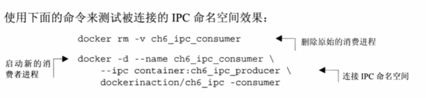

内存限制
在docker run命令上使用-m或--memory选项来设置内存限制，这个选项会接受一个值和一个基础单元作为参数。格式where unit = b,k,m or g在这个命令中:
b-字节、k-千字节、m-兆字节、g-千兆字节。
docker run -d --name ch6_mariadb --memory 256m --cpu-shares 1024 --user nobody --cap-drop all dockerfile/mariadb
清理正在运行的容器
// -v 选项清理数据卷 f选项：如果容器正在运行 会停止他们
docker rm -vf ${container}
IPC命名空间 